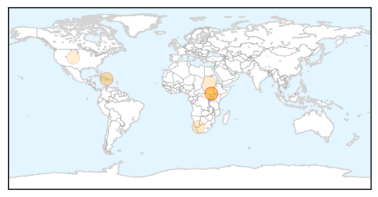

Cholera
30-Day Web Trend
3 alerts, 0 warnings

30-Day Twitter Trend
0 alerts, 0 warnings

Article Locations
Article Confidences

Top Articles:
- 0.988
- Time Is Running Out for Haiti
- 0.951
- Lassa fever kills one in Plateau, 5 hospitalised
- 0.685
- MSF accuses UN of ‘indifference’ to plight of South Sudan refugees
- 0.640
- No toilets for grape workers
- 0.614
- Doctors Without Borders blasts UN in S Sudan
- 0.598
- Doctors Without Borders blasts UN in South Sudan
- 0.594
- U.N. mission in South Sudan accused by Doctors Without Borders of "indifference" to refugees
- 0.594
- Doctors group raps UN attitude to refugees
- 0.523
- Nations cannot ignore disease
Top Tweets:
-
No tweets found for Apr 09, 2014
Dengue Fever
30-Day Web Trend
5 alerts, 1 warnings

30-Day Twitter Trend
5 alerts, 0 warnings

Article Locations

Article Confidences

Top Articles:
- 0.999
- The dengue mosquito bites and makes Latin America sick - World
- 0.921
- U.N. Buzzes Over Vector Borne Diseases
- 0.901
- Health Department to canvass Rio area Saturday in hopes of preventing dengue fever outbreak
- 0.899
- Sangam University Bhilwara Rajasthan
- 0.741
- UNICEF Responds to Urgent Water and Sanitation Needs
- 0.739
- Construction sites found harbouring aedes mosquitoes - Nation
- 0.626
- Dengue Fever:outreach and prevention efforts in Martin County
- 0.624
- Insecticide manufacturer gives RM200,000 to ministry's prevention initiative - Community
- 0.551
- Public health: High Court asks for report on dengue fever prevention
Top Tweets:
-
No tweets found for Apr 09, 2014